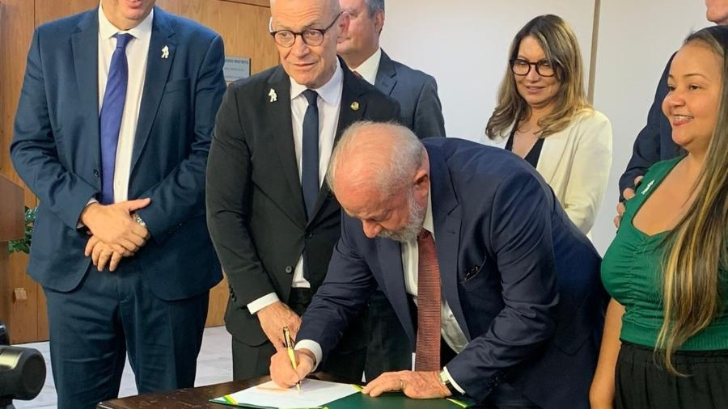

POLÍTICA NACIONAL
Lula assina projeto que garante recursos para pagar piso salarial de R$ 4,7 mil a enfermeiros
O presidente Luiz Inácio Lula da Silva (PT) assinou, nesta terça-feira (18/4), um projeto de lei para regulamentar o piso salarial nacional da enfermagem. Aprovado pelo Congresso em 2022, o novo piso para os trabalhadores da categoria foi suspenso pelo Supremo Tribunal Federal (STF) em setembro do mesmo ano porque o texto não previa a origem dos recursos necessários para arcar com os reajustes no serviço público.
Bolsonaro volta a minimizar pandemia e chama Covid-19 de 'gripezinha'
Indagado sobre seu estado de saúde, o presidente Jair Bolsonaro voltou a minimizar, nesta sexta-feira, a gravidade da Covid-19, causada pelo novo coronavírus, e chamou a doença de "gripezinha". No Brasil, pelo menos 904 foram infectadas e onze já morreram. De acordo com a Organização Mundial da Saúde (OMS), a doença já infectou 209 mil pessoas e matou 8,7 mil.
Invasão em Brasília completa um mês; prejuízo chegou a R$ 21 milhões, e 1,4 mil foram presos
O episódio deixou um prejuízo de ao menos R$ 21 milhões ao poder público, segundo estimativas feitas pelos Três Poderes, e ocorreu por falha na operação das forças de segurança pública do DF, de acordo com a equipe de intervenção que atuou na capital federal depois do ocorrido.